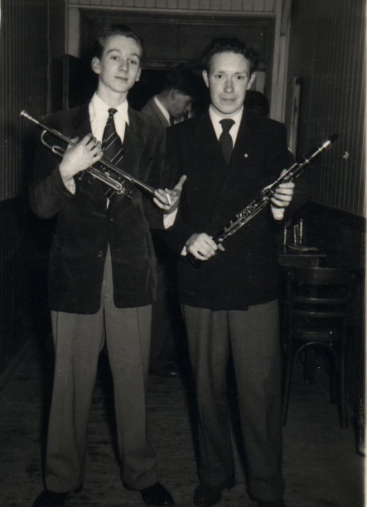

Jazz: The Beginnings
 Well, I
suppose the beginning must have been going to Kennard's in Croydon, before
the war with my mother, and whilst she took afternoon tea I would go and
stand at the foot of the stage and watch the three musicians playing for
'tea'.
I remember being fascinated by the sound and spectacle. About 1948,
I would have been about 14, I joined the Sea Cadet Corps at T.S.Sikh, just
along the Croydon Road, Penge S.E.20. There, I elected to play the bugle
and duly practiced every Tuesday and Thursday and did the Church parades on
Sunday mornings. Wonderful fun was had all round.
In 1950 Dad got the job
wholesaling newspapers at Strood, in Kent and we all had to move down to
Gillingham. A splendid house at 7 Park Avenue, with tennis courts in the
back garden and loads of apple trees etc., etc. I had another term at
Beckenham and Penge County Grammar school for boys to complete my school
certificate exams, which I scraped past with 5 passes and a credit in art.
When I finally left school, I thought I might have the usual six week
summer break, but Dad said "No! - you start work on Monday. Your wages will
be 25/=d. a week and you will pay your mother £1.00 a week for your keep"
That first Monday, I was sick and had diarrhoea all day, and then all
evening too. Well eventually I was carted into St. Barts and at 7.30 the
next morning they removed my appendix. When I came round at about ten to
ten, the radio was playing Sid Phillips "Hors d'ouvres" which was the
signature tune to "Housewives choice", a popular program at the time. A
friendly voice in the next bed asked how I was feeling etc., and introduced
himself as Peter Griffin. He was a couple of years older than me, and said
when I felt a bit better and got home, would I like to come and visit his
youth club in Magpie Hall Road, at the back of the All Saints Church. That
first visit, they had the usual table tennis table and snooker table (small
size), but there was a guy called Dennis Mills, who had a drum kit, and
Peter Griffin who played piano (His father was the leader of the Empire
Theatre pit orchestra) Between them they had the 'Brons' small band
orchestrations for "intermission riff" - It sounded less than perfect! When
the evening was over, my newly made friends said they were all going to the
Paget in Gillingham on Saturday to see 'FREDDY RANDALL' and his band, would
I like to go along with them. I imagined it would be a sort of a dance.
I
arrived early and paid my 3/6d. and 2d. to put my coat in the cloakroom. I
bought a light ale for 10½d. and sat and waited. The hall, which would have
held 600 people was empty, and Reggie Keam, (I now know) with his trio was
playing for dancing. After about half an hour of this, I was on the point
of going home. No one had turned up and it was nearly eight. Then the main
doors were flung open and masses of people trouped in carrying the
instruments and sound gear for the band. Within minutes the stage was set.
The band all in royal blue suits, and Freddy, with a coffee coloured
gaberdine suit and largish dark brown suede 'brothel creepers' - Without
any further ado they launched off with 'Jazz Club Stomp' I was gobsmacked
as they say nowadays. - completely bowled over! The joint was jumping as
they say. It was very soon jam packed full, and it was a standing room only
concert. That's the only way to describe it. People called for 'requests'
and the band duly played them. Never any reference to sheet music. when it
finished at 11.45 there were special late buses to every point of the
Medway towns and for the exorbitant price of 6d. (2½p.) I arrived back in
Strood, still floating on air to be met by my father. Where have you been?
what have you been doing, who with... etc., The very next day I hunted
through 'Melody Maker' and sent away to Boosey and Hawkes for a trumpet in
a case with a 'how to play trumpet' book. It cost me £7.10. 0d. and in no
time at all I had bought the sheet music to bewitched, bothered and
bewildered, -which I was! In order to short cut the process of remembering
how the scale was produced, I just pencilled the fingering over the notes
on the sheet music and something resembling it began to come out the other
end. How ever, very soon I was caught with it and the usual inquisition
followed. Who's is it, where did you get the money, and worst of all 'You
cannot play it indoors it will annoy the neighbours! So I had to wait until
I was alone to practice playing it.
One evening I was walking from Montfort
Road Strood to Gillingham where I lived, and from a small building at the
rear of the 'Bull's Head' I heard the unmistakable sound of Tbn Tpt and
Clt. I stopped. I stood and listened. When the tune stopped, I knocked n
the door. -Deathly silence! I knocked again...."what do you want?" asked
one, Martin Cameron I believe. "May I come in?" said I, and in I went. Can
you play anything? I was asked. I have a trumpet I said, and the response
was encouraging. "That's good" they said "Martin's leaving soon, can you
join us next week?"
About that same time, I found that some other lads were
gathering at the rear of Banister's Motorcycle shop, in Railway Street,
Chatham every Sunday morning. There were old disused and damp air raid
shelters which were ideal for giving the effect of echo, and we were out of
everyones way. No-one disturbed us. One Sunday morning there were a few of
us running over "Frankie and Johnny" or something similar, when two
youngsters arrived with banjo cases. Turned out their dad had made them the
banjos. The younger one was still in short trousers. That was Tony and Vic
Pitt - and they could play!